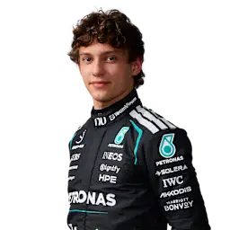
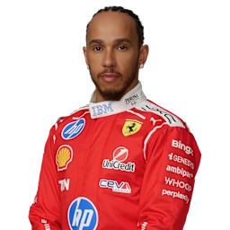
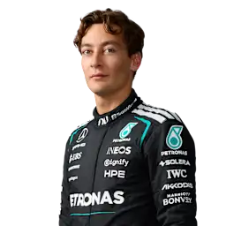
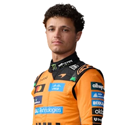
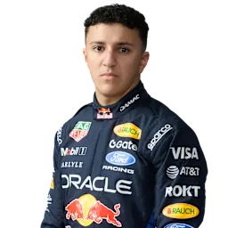
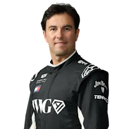

Pos · 排名Driver / Team · 车手 / 车队Points · 积分
- 01

基米·安东内利 · Kimi AntonelliMercedes156
- 02

刘易斯·汉密尔顿 · Lewis HamiltonFerrari90
- 03

乔治·拉塞尔 · George RussellMercedes88
- 04夏尔·勒克莱尔 · Charles LeclercFerrari75
- 05奥斯卡·皮亚斯特里 · Oscar PiastriMcLaren60
- 06

兰多·诺里斯 · Lando NorrisMcLaren58
- 07马克斯·维斯塔潘 · Max VerstappenRed Bull Racing43
- 08

伊萨克·哈贾尔 · Isack HadjarRed Bull Racing29
- 09利亚姆·劳森 · Liam LawsonRacing Bulls26
- 10皮埃尔·加斯利 · Pierre GaslyAlpine26
- 11奥利弗·贝尔曼 · Oliver BearmanHaas F1 Team18
- 12弗朗哥·科拉平托 · Franco ColapintoAlpine15
- 13阿维德·林德布拉德 · Arvid LindbladRacing Bulls13
- 14卡洛斯·赛恩斯 · Carlos SainzWilliams6
- 15亚历山大·阿尔本 · Alexander AlbonWilliams5
- 16埃斯特班·奥康 · Esteban OconHaas F1 Team3
- 17加布里埃尔·博尔托莱托 · Gabriel BortoletoAudi2
- 18费尔南多·阿隆索 · Fernando AlonsoAston Martin1
- 19尼科·霍肯伯格 · Nico HulkenbergAudi0
- 20瓦尔特利·博塔斯 · Valtteri BottasCadillac0
- 21

塞尔吉奥·佩雷兹 · Sergio PerezCadillac0
- 22兰斯·斯特罗尔 · Lance StrollAston Martin0